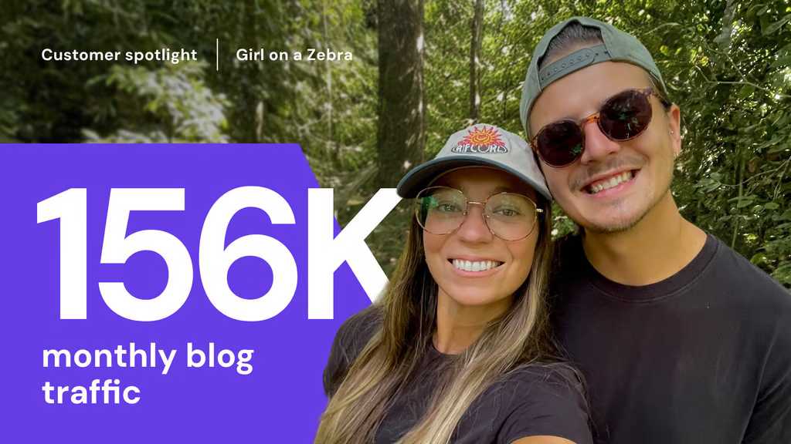
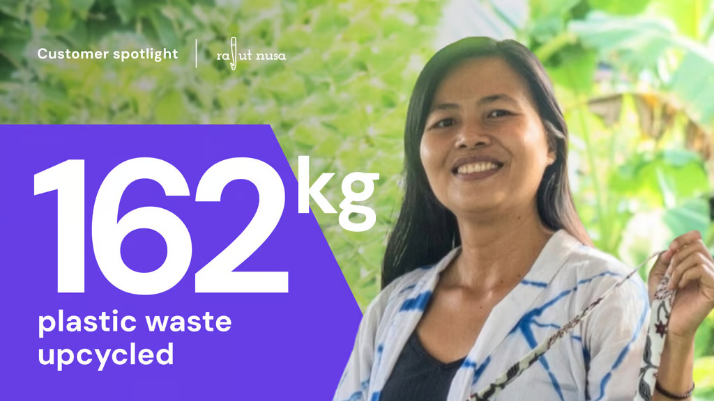

Descubre las historias de héroes reales que convirtieron sus sueños e ideas en realidad en línea con Hostinger.

19 Jul • HISTORIAS DE CLIENTES • CLIENTE DESTACADO • 5min
A Oliver y Carae no les faltaban ideas de negocio. A lo largo de los años, esta pareja amante de los viajes experimentó con todo tipo de proyectos, desde una marca de trajes de baño ecológicos hasta planes para abrir...

HISTORIAS DE CLIENTES • CLIENTE DESTACADO
Descubre cómo un emprendedor local transformó plástico desechado en productos ecológicos mientras desarrollaba un negocio en línea.